封面、目录与网页说明
现代麻雀技术论 · 日文 PDF · 第 1–3 页
译文与整理说明
逐靶独立证据与未改范围父审组合，五封面未知保留；来源限制在单独的编者说明导航单元，不属于作者正文。A原uncertain/全局false及raw不改。
现代麻将技术论－战术论 http://yabejp.web.fc2.com/mahjong/tactics.htmlp.1
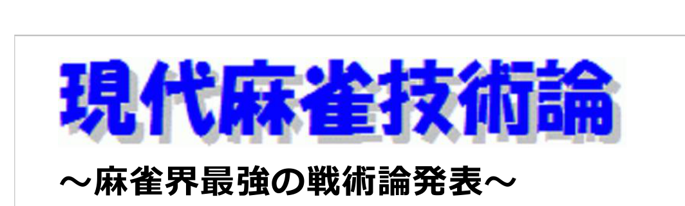
完整牌例文字与牌编码
蓝色粗体、灰色投影的站点标题：现代麻将技术论（原文：現代麻雀技術論）。
～发表麻将界最强的战术理论～ 结合最前沿的研究成果与强豪牌手的打法，经过缜密考察，阐述由此构建的最强理论。p.1
索引｜战术论｜研究开发资料｜专栏｜参考资料｜书籍介绍p.1
序章 麻将技术论 1．麻将技术概述p.1
第1章 牌效率论 讨论在无需特别考虑点数与名次状况的平场中，其他玩家没有发动进攻（立直、副露），或其进攻可以忽略时的选择技术，包括切什么牌、副露判断和立直判断。 1．牌效率的原则p.1
第1.1节 牌理 讨论牌的组合理论。 2．打牌选择的方法 3．孤立牌与单独搭子 4．对子与愚形搭子的比较 5．复合搭子1 6．复合搭子2 7．超愚形搭子与振听搭子 8．同位牌组的比较方法 9．边张搭子 10．外嵌张搭子 11．内嵌张搭子 12．两面搭子 13．拆对子 14．孤立的1、9牌 15．孤立的2、8牌 16．孤立的3～7牌 17．拆搭子 18．单独搭子与复合搭子的比较 19．孤立牌与复合搭子的比较 20．复合面子（多面听）p.1
第1.2节 先制听牌判断 讨论先制听牌时的选择技术，包括立直、默听、拆听和听口选择。 21-1．理解听牌效率 21-2．先制立直判断 21-3．以和牌为优先的默听 21-4．以防守为优先的默听 21-5．等待牌形变化的判断 21-6．听口选择p.1
第1.3节 副露效率 讨论副露（鸣牌）的技术。 22-1．副露牌理 22-2．副露判断 22-3．副露役种的构想 22-4．副露役种的做法 23．副露的原则 24．相对于门清牌理的变化之处p.1
第1.4节 役种构成技术 讨论役种的追求与宝牌的处理方法。 25．役种与宝牌构成的原则 26．断幺九 27．平和 28．一杯口 29．役牌对子 30．孤立役牌 31．三色同顺 32．一气通贯 33．对对和 34．七对子 35．染手（混一色、清一色的统称） 36．全带幺类 37．三暗刻 38．国士无双、流局满贯 39．门清手中的宝牌 40．副露手中的宝牌 41．后后付 42．形式听牌p.1
第1.5节 一向听效率 讨论一向听时的打牌选择技术。 43．重视先制听牌的原则 44．一向听牌形的分类 50．理解听牌机会 51．无雀头形p.1
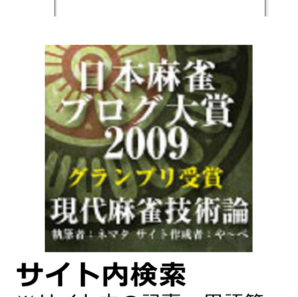
完整牌例文字与牌编码
绿色背景的获奖标牌。文字：日本麻将博客大奖2009；荣获最高奖；现代麻将技术论；撰稿人：ネマタ；网站制作者：や～べ。原文主标题为「日本麻雀ブログ大賞2009」「グランプリ受賞」「現代麻雀技術論」。
站内搜索 ※请从这里搜索站内的文章、术语等内容。p.1

完整牌例文字与牌编码
灰色矩形搜索按钮，文字：搜索（原文：検索）。
免费注册的网络麻将！ 本站已被刊载于《月刊网络麻将》2010年1月号！p.1
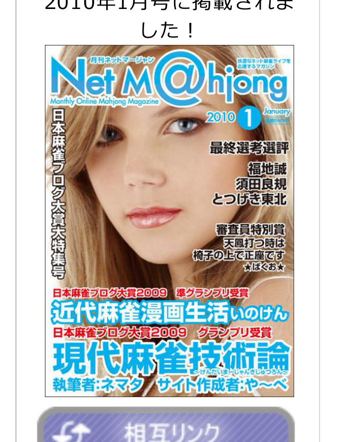
完整牌例文字与牌编码
杂志封面，背景为一名女性的面部照片。刊名：月刊网络麻将，Net M@hjong；英文副题：Monthly Online Mahjong Magazine。期号：2010年1月，January。右上有两行宣传小字，无法可靠辨认。左侧竖排：日本麻将博客大奖大特集号。右侧文字：最终评选评语；福地诚、须田良规、とつげき東北。评委特别奖：《打天凤时，会在椅子上跪坐》（原文：天鳳打つ時は椅子の上で正座です）；署名无法可靠辨认。下部文字：日本麻将博客大奖2009，荣获亚军奖；《近代麻将漫画生活》，いのけん。日本麻将博客大奖2009，荣获最高奖；《现代麻将技术论》，附有假名读音，但无法可靠辨认；撰稿人：ネマタ；网站制作者：や～べ。 【来源未辨明项】 封面右上“January”下方的极小文字分辨率不足，无法可靠辨认。 封面右上两行宣传小字无法可靠逐字辨认，也不能确认其完整译意。 主标题旁的假名读音过小，无法可靠逐字辨认。 评委特别奖条目下方的星号夹署名模糊，无法可靠辨认完整字形。
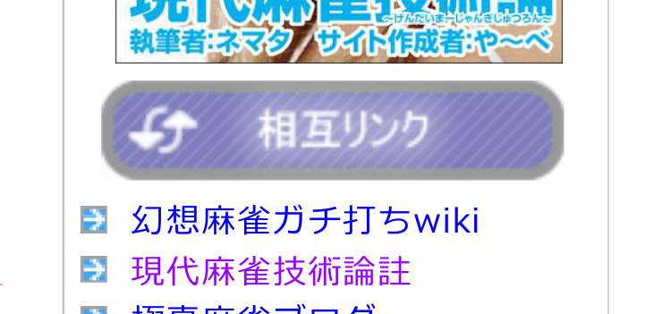 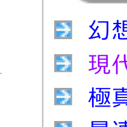 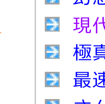 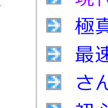 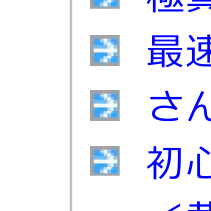 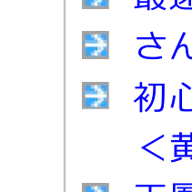 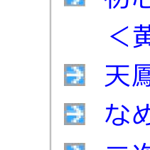 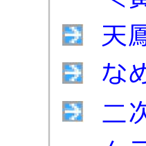 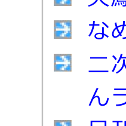 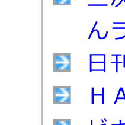 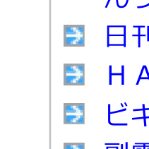 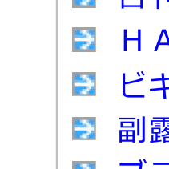 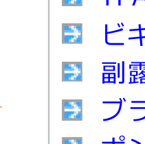 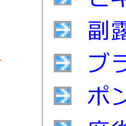 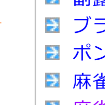 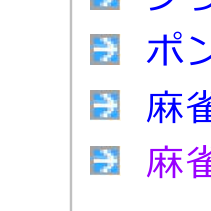 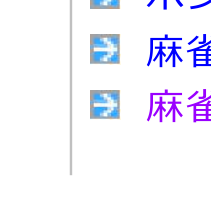友情链接横幅与装饰性链接箭头幻想麻将认真打牌wiki
装饰性链接箭头现代麻将技术论注
装饰性链接箭头极真麻将博客
装饰性链接箭头最速流麻将战术论
装饰性链接箭头三麻四麻博客
装饰性链接箭头面向初学者的麻将讲座〈围绕黄金牌的故事〉
装饰性链接箭头天凤，避免末位的日子
装饰性链接箭头なめとん的麻将博客
装饰性链接箭头科学研究二次元｜りーりん实验室
装饰性链接箭头日刊鸵鸟蛋
装饰性链接箭头HAZ的研究人生
装饰性链接箭头新手的好运
装饰性链接箭头副露海冬
装饰性链接箭头兄控女高中生的天凤反省簿
装饰性链接箭头碰与吃的冷冻库
装饰性链接箭头麻将一番街
装饰性链接箭头麻将概论p.1
第1页，共4页 2014-03-02 11:35p.1
现代麻将技术论－战术论 http://yabejp.web.fc2.com/mahjong/tactics.htmlp.2
45．两面子余张牌形；46．两面子完全形；47．两面子余张牌形与完全形的选择1；48．两面子余张牌形与完全形的选择2；49．两面子余张牌形与完全形的选择3。 52．两面子余张牌形与无雀头形的选择；53．两面子完全形与无雀头形的选择；54．靠张形；55．两面子完全形与靠张形的选择；56．退回两向听。p.2
第2章 攻守取舍论p.2
介绍平场中应对他家进攻（立直、副露）的技术，包括进攻、弃和与防备。p.2
2.1节 对未听牌他家的应对p.2
介绍如何防备他家的进攻，包括扣牌、好牌先打与防御。条目为：1．扣牌；2．应对扣牌；3．好牌先打；4．序盘的防御。 ※攻守取舍论第5～12项（先制听牌判断）已移至牌效率论第21项。p.2
2.2节 弃和技术p.2
介绍弃和技术。条目为：13．彻底弃和；14．判断他家听牌张的有效局面；15．没有安全牌时的应对方法。p.2
2.3节 应对立直p.2
介绍应对他家立直的技术，包括进攻、弃和与听牌形的选择。条目为：16．有赤宝牌麻将的立直平均点数；17．听牌时的应对；18．面对立直时的听牌形选择；19．应对两家立直；20．微妙状况下的应对；21．一向听时的应对。p.2
2.4节 应对鸣牌副露p.2
介绍应对他家副露的技术，包括进攻、弃和、扣牌与迂回打法。条目为：22．鸣牌副露的特点；23．判断鸣牌副露者是否听牌；24．按副露手的役种分别应对的方法。p.2
2.5节 补充p.2
介绍其他应对技术。条目为：25．临近流局时的攻守取舍；26．迂回打法与扣牌的方法；27．为消除一发或改变海底归属而鸣牌。p.2
第3章 读牌技术论p.2
介绍预测非公开信息的技术，包括他家的手牌、牌山中的牌、他家的心理与打牌风格。条目为：1．读牌的原则。p.2
3.1节 枚举读牌p.2
介绍预测危险牌的技术。条目为：2．十八分之一理论；3．判断字牌听牌。p.2
3.2节 手牌构成解读p.2
介绍预测他家听牌张与役种的技术。条目为：4．牌河信息的分类；5．邻近听牌立直；6．逆序切牌1；7．逆序切牌2；8．解读鸣牌副露；9．切宝牌；10．拆搭子1；11．拆搭子2；12．拆搭子3；13．拆对子1；14．拆对子2；15．役种解读1；16．役种解读2；17．判断邻近单骑听牌；18．判断七对子；19．读牌的有效局面；20．判断手牌进展。p.2
3.3节 牌山解读p.2
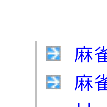decorative（装饰）：链接箭头麻将JOO（ジョーオー）p.2
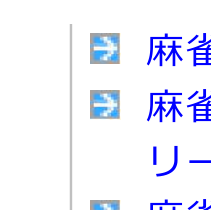decorative（装饰）：链接箭头靠麻将大赚一笔☆在散客雀庄取胜的方法p.2
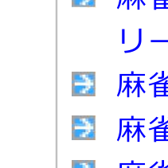decorative（装饰）：链接箭头麻将雀龙.comp.2
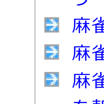decorative（装饰）：链接箭头麻将％p.2
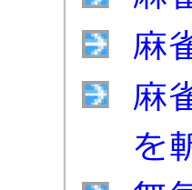decorative（装饰）：链接箭头锐评麻将书！锐评麻将游戏！！p.2
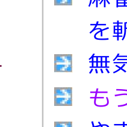decorative（装饰）：链接箭头无精打采、漠不关心（暂定）p.2
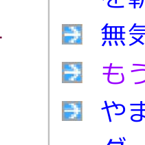decorative（装饰）：链接箭头眼里只剩天凤p.2
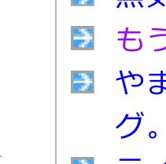decorative（装饰）：链接箭头Yamashita Daichan的博客。p.2
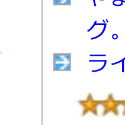decorative（装饰）：链接箭头莱拉的奋斗记p.2
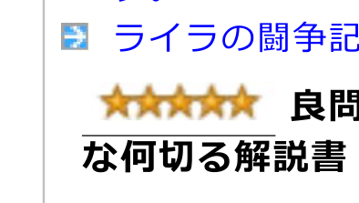decorative（装饰）：五星图标好题齐备！优质的何切讲解书！！这是市售书籍中最优秀的何切讲解书，收录的都是好题，讲解详细且合乎逻辑。p.2
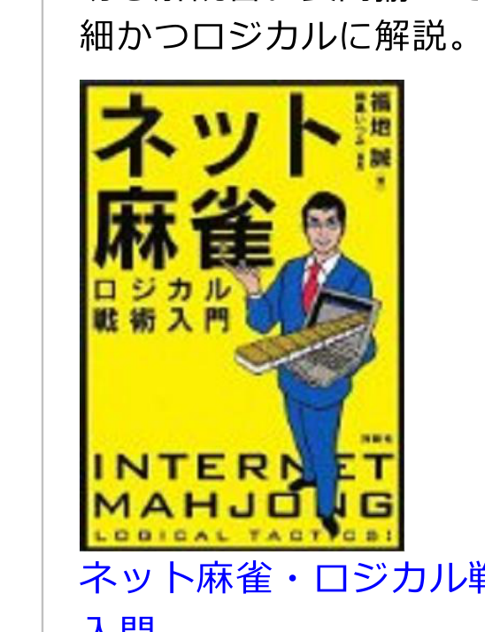
完整牌例文字与牌编码
黄色书封，黑色边框。大字原文为「ネット麻雀」「ロジカル戦術入門」，即《网络麻将·逻辑战术入门》；作者名「福地 誠」。下方英文为「INTERNET MAHJONG」，底部另有「LOGICAL TACTICS」字样。插画为穿蓝色西装、系红领带的男子，托着麻将桌模型。 【来源未辨明项】 作者名旁及封面右下方的小字分辨率不足，无法完整辨认。 底部「LOGICAL TACTICS」之后是否还有字符，无法确认。 男子所托模型中的细小麻将牌面无法逐张辨认，不能确定各牌的花色、点数或赤五状态。
《网络麻将·逻辑战术入门》，福地诚著，洋泉社，2009-10-24。p.2
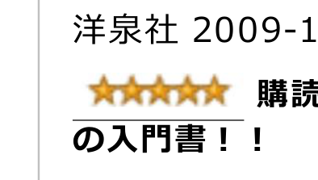decorative（装饰）：五星图标必读！最强入门书！！为了加深对本站战术论的理解，也应一并购买阅读此书。p.2
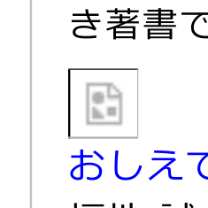
完整牌例文字与牌编码
白色方框内显示灰色破损图片图标，原图片未显示。 【来源未辨明项】 缺失图片的原始内容无法辨认。
《告诉我！科学麻将》，福地诚著，洋泉社，2009-02-25。p.2
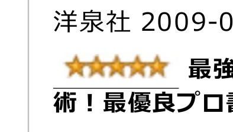decorative（装饰）：五星图标最强职业牌手的战术！最优秀的职业牌手著作！！这是出身网络麻将、以最强著称的职业牌手所写的战术书，是职业牌手战术书中最优秀的一本。p.2
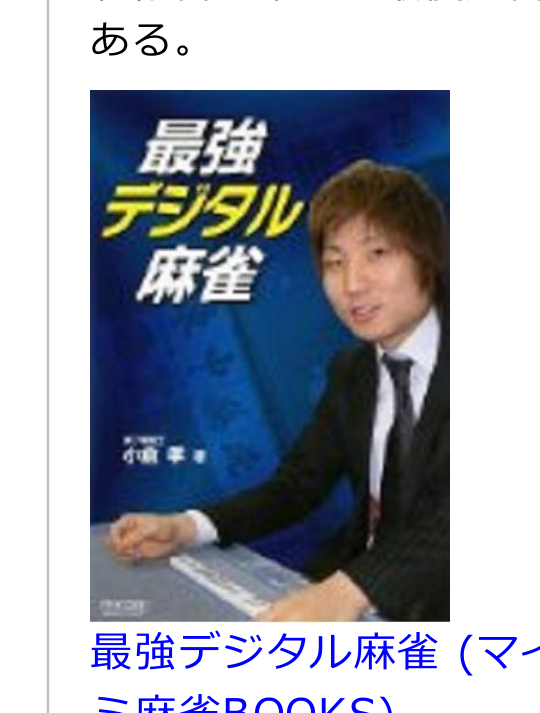
完整牌例文字与牌编码
深蓝色书封，书名原文为「最強デジタル麻雀」，即《最强数字麻将》；封面作者署名模糊，无法可靠辨认。封面照片是一名穿深色西装、白衬衫、系领带的男子坐在麻将桌旁。 【来源未辨明项】 照片下方桌面处的细小牌面无法逐张辨认，不能确定各牌的花色、点数或赤五状态。 封面左下方作者署名模糊，无法可靠辨认完整字形。
《最强数字麻将》（Mycom麻将BOOKS），小仓孝著，每日通讯（毎日コミュニケーションズ），2009-03-25。p.2
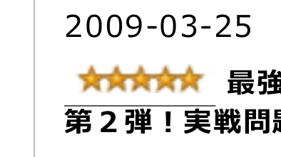decorative（装饰）：五星图标最强职业牌手的战术第2弹！实战问题集！！这是《最强数字麻将》的续篇。p.2
第2页，共4页。 2014-03-02 11:35p.2
现代麻将技术论—战术论 http://yabejp.web.fc2.com/mahjong/tactics.htmlp.3
关于牌山的预测技术：21．解读牌山的好处；22．牌组解读；23．花色解读；24．反射解读。p.3
第3.4节 补充p.3
关于其他预测技术：25．迷彩；26．逆序切牌3；27．延迟解读；28．理牌解读；29．对人解读。p.3
第4章 点棒状况判断技术p.3
关于在非平场局面（包括倒数第二局和最终局）中考虑顺位分的打牌选择技术：1．点棒状况判断的原则；2．顺位期望值的思考方法；3．点数计算技法；4．最终局的心得与打法；5．最终局放过和牌的判断；6．最快和牌技术；7．速攻的局面；8．逆转尚不确定时的鸣牌判断；9．最终局的攻守取舍1；10．最终局的攻守取舍2；11．倒数第二局的攻守取舍；12．满贯和牌技术；13．大幅落后、处于末位的局面；14．和牌终局的技法；15．濒临被击飞的局面；16．供托与本场棒的应对；17．开杠判断。p.3
第5章 提高水平的方法论p.3
关于提高麻将水平的高效学习方法：1．合理判断习得论；2．技术习得论；3．如何保持心态与专注力。p.3
第6章 实战演习p.3
第6.1节 切牌选择题解题论p.3
关于切牌选择题的思考方法与讨论方法：1．切牌选择题的思考方法；2．切牌选择题讨论法。p.3
第6.2节 切牌选择题研讨p.3
精选切牌选择题的答案与解说：1．“ネマー日记”博客题目；2．“数字麻将切什么？”网站题目；3．“鴉〃的麻将解说”网站题目；4．“MJ4麻将实力判定”网站题目；5．“MFC7切什么”网站题目。p.3
第6.3节 牌谱研讨p.3
1．突击东北对职业牌手：公开线下对局；2．突击东北对木原职业牌手：公开网络对局；3．四大网络麻将对抗赛：公开网络对局。p.3
超越街机麻将的免费3D在线麻将游戏登场！！p.3
免费3D在线麻将游戏《雀龙门》：可以体验真实麻将的临场感与紧张感；任何人只需操作鼠标，就能轻松享受激烈的对局；对局中的语音演出、手部动作等让对局气氛更加热烈的要素一应俱全。p.3
以实战形式讲解前作中介绍的小仓系统。p.3
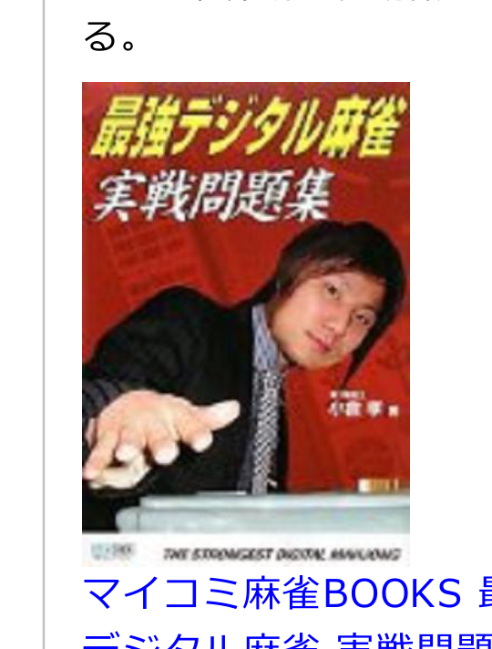
完整牌例文字与牌编码
《最强数字麻将：实战问题集》的红色书封。上方书名原文为“最強デジタル麻雀”“実戦問題集”，右侧作者署名模糊，无法可靠辨认，下方英文为“THE STRONGEST DIGITAL MAHJONG”。封面照片为一名身穿深色外套的男子朝前伸手，下方可见麻将桌边缘。 【来源未辨明项】 作者署名上方的小字、封面底部左侧标识及其他细小文字模糊，无法可靠辨读。 封面右侧作者署名模糊，无法可靠辨认完整字形。
MYCOM麻将BOOKS《最强数字麻将：实战问题集》，每日Communications，2009-11-25。p.3
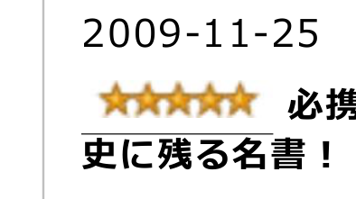装饰性五星图标（decorative）必备之书！麻将史上留名的名著！！p.3
本站的战术论也参考了本书的数据，可以说是一本价值超过售价的著作。p.3
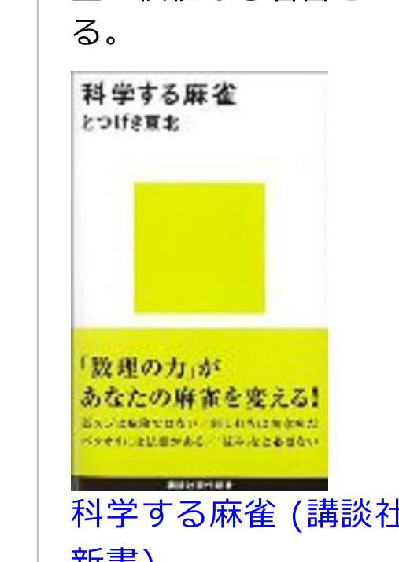
完整牌例文字与牌编码
《科学麻将》的书封：白色底，上部书名原文为“科学する麻雀”，作者名为“とつげき東北”，即突击东北；中间有黄绿色方块，下半部为黄绿色腰封。腰封大字为“「数理の力」があなたの麻雀を変える！”，意为“‘数理的力量’改变你的麻将！”。底部有黑色横条，条内小字无法可靠辨读。 【来源未辨明项】 腰封大字下方的两行小字模糊，无法可靠辨读。 底部黑色横条中的细小文字无法可靠逐字辨认。
《科学麻将》（讲谈社现代新书），突击东北著，讲谈社，2004-12-18。p.3
《咲-Saki-》动画特别网站p.3
第3页，共4页。2014-03-02 11:35。p.3